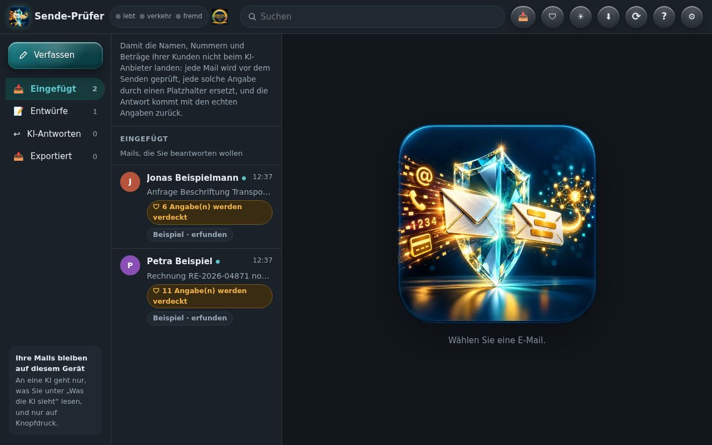
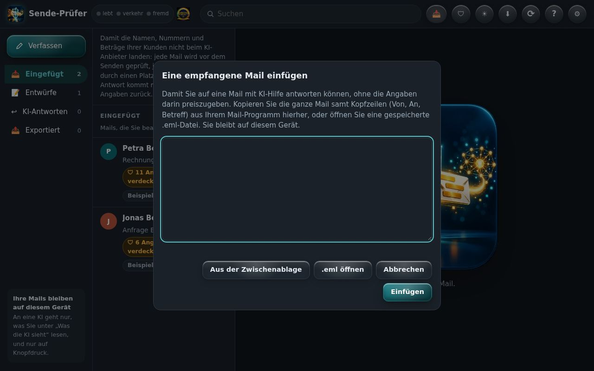
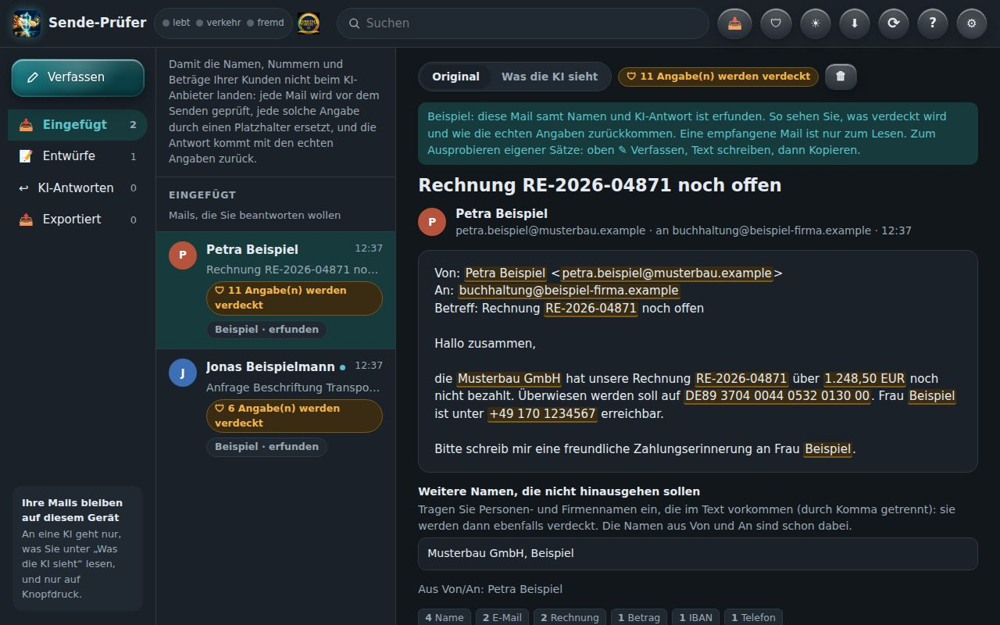
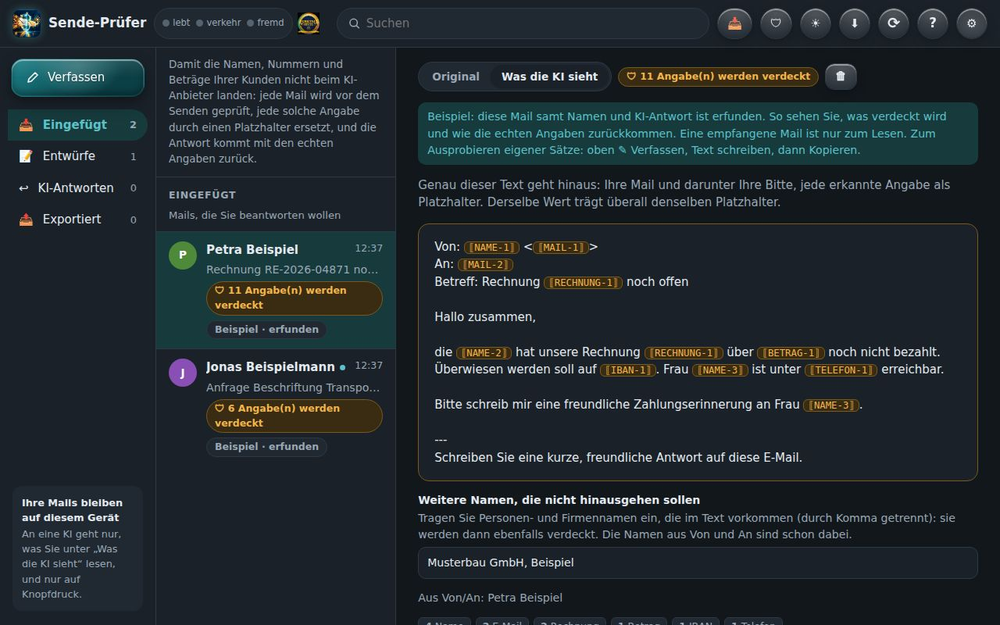
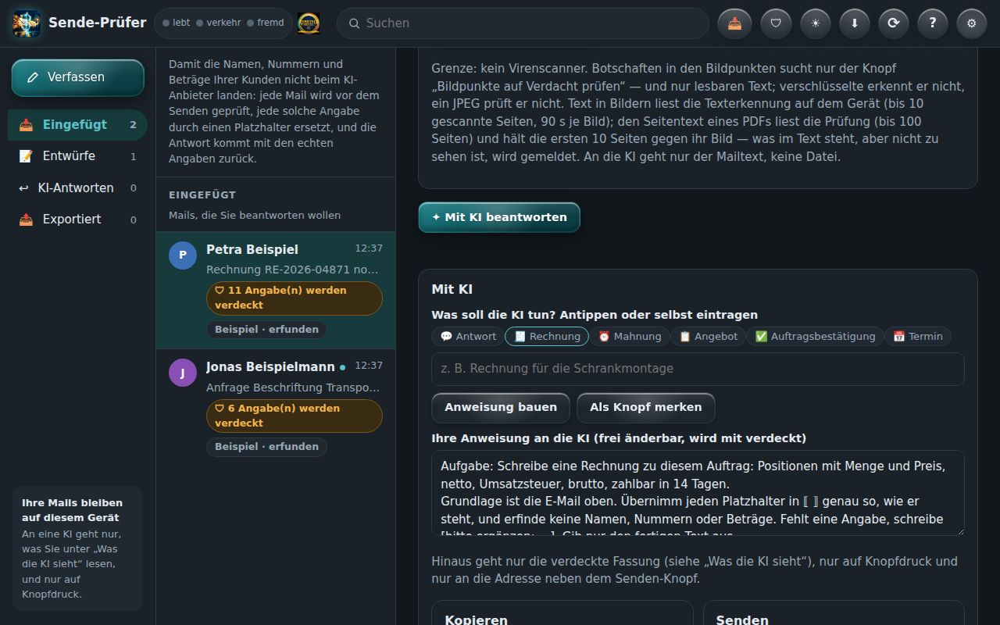
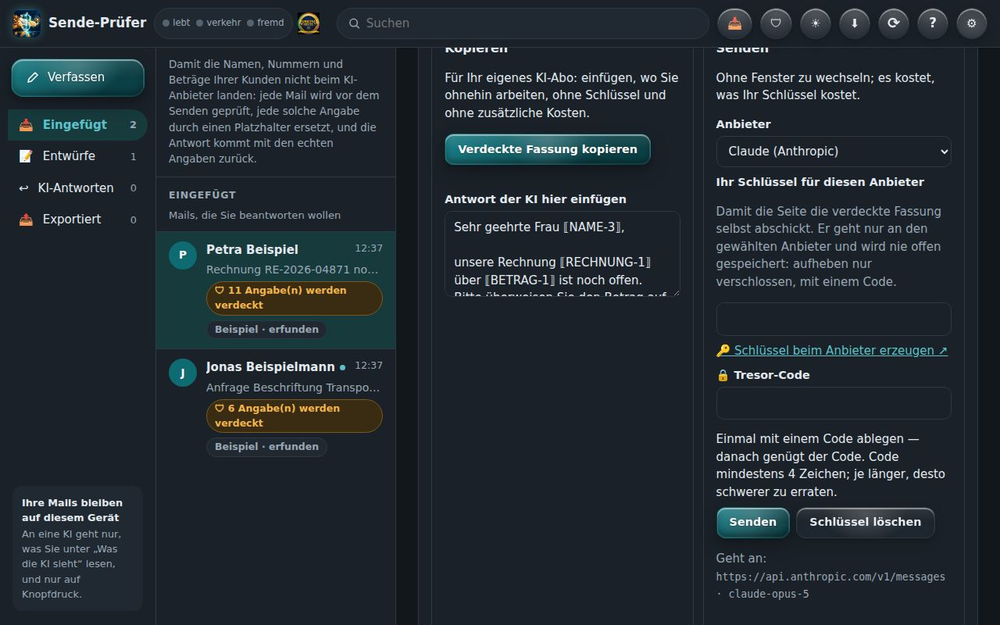
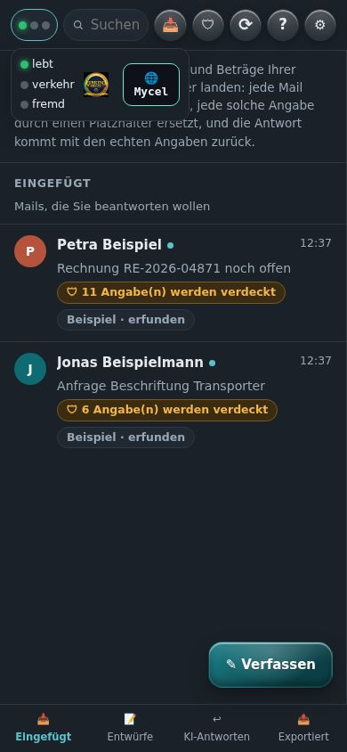
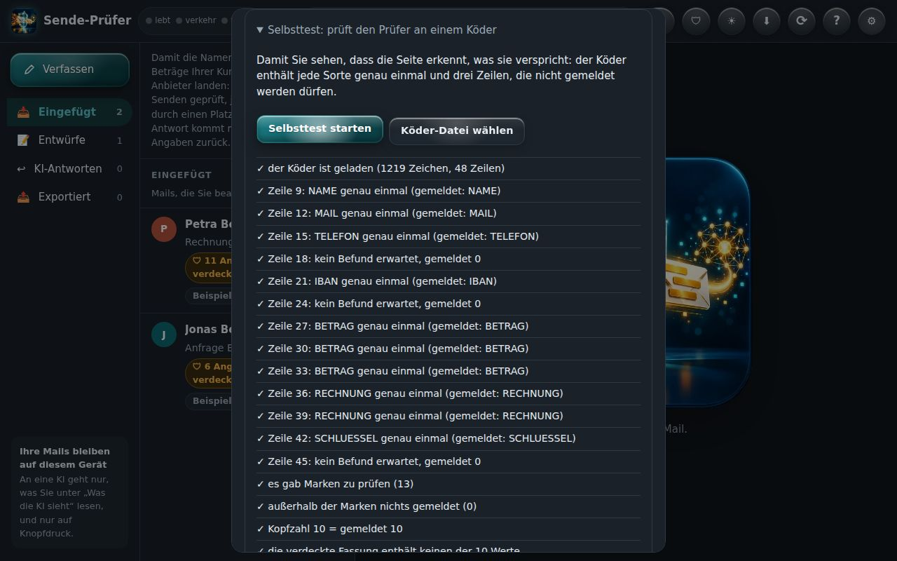

In 12 Szenen durch den ganzen Weg: eine Mail kommt herein, die KI sieht nur Platzhalter, und die Antwort kommt mit den echten Angaben zurück. Alle Bilder sind echte Aufnahmen der App mit einer erfundenen Mail.

Links die vier Ordner: Eingefügt (empfangene Mails), Entwürfe, KI-Antworten und Exportiert. In der Mitte die Liste, rechts die gewählte Mail. Jede Zeile trägt eine Zahl: so viele Angaben werden vor dem Weg zur KI verdeckt. Alles liegt im Speicher dieses Browsers, nicht auf einem Server.
Das ist Ihr Postfach im Browser. Vier Ordner, eine Liste – und rechts die Mail. Die Zahl an jeder Zeile zeigt, wie viele Angaben geschützt werden. Nichts davon liegt auf einem Server.

📥 Mail einfügen nimmt eine empfangene Mail auf: aus der Zwischenablage, als Text oder als gespeicherte .eml-Datei. Kopfzeilen (Von, An, Betreff) werden erkannt, auch kodierte. Die Mail landet in „Eingefügt“ und bleibt auf diesem Gerät.
Eine Mail holen Sie mit „Mail einfügen“ herein: aus der Zwischenablage oder als gespeicherte Datei. Von, An und Betreff erkennt der Sende-Prüfer selbst.

Die Beispiel-Mail aus dem Menü (⚙ → Beispiel-E-Mail laden) ist erfunden und zeigt den ganzen Weg: Namen, eine Firma, Mailadressen, eine Rechnungsnummer, einen Betrag und eine Kontonummer. So sieht Ihr Text aus — in der Ansicht „Original“.
Hier sehen Sie eine erfundene Mail mit allem, was nicht zur KI soll: Namen, Adressen, Rechnungsnummer, Betrag und Kontonummer.

Ein Tipp auf Was die KI sieht zeigt genau den Text, der hinausgehen würde. Jede Angabe ist durch einen Platzhalter ersetzt, etwa ⟦NAME-1⟧ oder ⟦BETRAG-1⟧. Dieselbe Angabe bekommt immer denselben Platzhalter, damit die KI den Sinn behält.
Mit „Was die KI sieht“ erscheint genau der Text, der hinausgeht. Geschützte Angaben werden durch Platzhalter ersetzt. Dieselbe Angabe bekommt immer denselben Platzhalter.
Mailadressen, Nummern und Beträge erkennt der Prüfer an ihrer Form. Namen nicht — „Müller“ sieht aus wie jedes andere Wort. Deshalb werden die Namen aus Von und An übernommen, und unter Weitere Namen tragen Sie ein, was sonst noch verdeckt werden soll: eine Firma, ein Kollege, ein Ort.
Die Namen aus Von und An übernimmt der Sende-Prüfer selbst. Weitere Namen tragen Sie hier ein.

Unter Was soll die KI tun? eine Aufgabe antippen — Antwort, Rechnung, Mahnung, Angebot, Auftragsbestätigung, Termin — oder selbst eintragen und Anweisung bauen. Daraus entsteht die ganze Anweisung: Platzhalter bleiben, nichts wird erfunden, Fehlendes wird als [bitte ergänzen] markiert. Als Knopf merken legt eigene Aufgaben als Knopf an. Auch die Anweisung geht nur verdeckt hinaus.
Was soll die KI tun? Wählen Sie eine Aufgabe, etwa Rechnung oder Mahnung, oder tragen Sie selbst eine ein. Daraus entsteht die vollständige Anweisung. Eigene Aufgaben lassen sich speichern.

Kopieren für Ihr eigenes KI-Abo: in ChatGPT, Claude oder Le Chat einfügen, ohne Schlüssel und ohne zusätzliche Kosten. Senden geht direkt an Claude, ChatGPT, Gemini, OpenRouter oder Mistral, mit Ihrem eigenen Schlüssel — es kostet, was Ihr Schlüssel kostet. Beide Wege sind gleichrangig; hinaus geht nur der verdeckte Text, und nur auf Knopfdruck.
Jetzt haben Sie zwei Wege: den geschützten Text kopieren und Ihr eigenes KI-Abo nutzen – oder direkt mit Ihrem Schlüssel senden. Hinaus geht nur der geschützte Text und nur, wenn Sie es auslösen.
Die Antwort der KI enthält die Platzhalter. Eingefügt (oder direkt empfangen) setzt der Sende-Prüfer die echten Angaben wieder ein — hier steht dann wieder „Frau Beispiel“ und „1.248,50 EUR“. Ablegen, als .eml speichern oder teilen geht von hier aus.
Die Antwort der KI kommt mit Platzhaltern zurück. Der Sende-Prüfer setzt die echten Angaben wieder ein. Danach können Sie die Antwort ablegen, speichern oder teilen.
🛡 Abschirmen hält Schreib-Helfer wie Grammarly oder LanguageTool und die KI-Schreibhilfe des Browsers von den Schreibfeldern fern. Hängt etwas Fremdes Elemente in die Seite, erscheint oben ein roter Hinweis und die Lampe fremd leuchtet. Das ist eine Bitte an die Erweiterungen, kein Riegel — Programme, die den Bildschirm mitlesen, sieht keine Webseite.
„Abschirmen“ hält Schreibhelfer aus den Feldern heraus. Versucht etwas Fremdes mitzulesen, leuchtet die Lampe „Fremd“.
Oben neben dem Namen die Netz-Leiste: drei Lampen (lebt · verkehr · fremd), das Siegel und die Mycel-Blase. Der Sende-Prüfer ist ein Knoten im SBKIM-Netz mit eigener Kennung. Mit dem Netz verbindet er sich nur, wenn Sie in der Mycel-Blase darauf tippen — und dann geht nur seine Visitenkarte hinaus, keine Mail.
Oben sehen Sie die Netz-Leiste mit drei Lampen, Siegel und Mycel-Blase. Ins Netz geht der Sende-Prüfer nur, wenn Sie es wollen – niemals mit Ihren Mails.

Am Handy stehen oben nur die drei Lampen. Ein Tipp klappt Namen, Siegel und Mycel-Blase darunter auf, ein Tipp daneben schließt wieder. Die Ordner liegen unten, ✎ Verfassen schwebt rechts unten.
Am Handy zeigen drei Punkte den Zustand. Ein Tipp öffnet Siegel und Netz. Die Ordner liegen unten.

Im Menü (⚙) prüft der Selbsttest den Prüfer an einem Köder: jede Sorte steht dort genau einmal, dazu Zeilen, die nicht gemeldet werden dürfen. So sehen Sie selbst, dass er erkennt, was er verspricht — ohne eigene Daten.
Der Selbsttest prüft den Sende-Prüfer mit einem Köder. So sehen Sie selbst, ob er hält, was er verspricht.